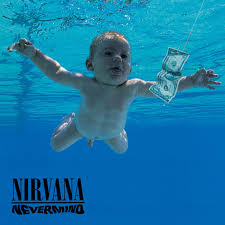
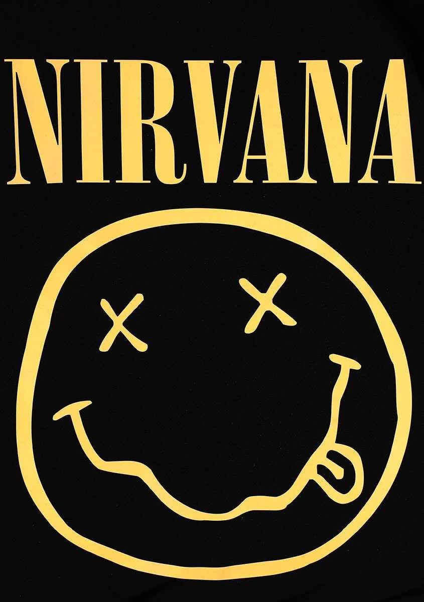

capitulo 1
Nirvana fue una banda de rock estadounidense formada en Aberdeen, en 1987. Fundada por el cantante y guitarrista Kurt Cobain y el bajista Krist Novoselic, la banda pasó por una sucesión de bateristas, sobre todo Chad Channing, y luego reclutó a Dave Grohl en 1990.
.jpg)
capitulo 2
A fines de la década de 1980, Nirvana se estableció como parte de la escena grunge de Seattle y lanzó su primer álbum, Bleach, para el sello discográfico independiente Sub Pop en 1989. Desarrollaron un sonido que se basaba en contrastes dinámicos, a menudo entre versos tranquilos y coros pesados. Después de firmar con el sello discográfico DGC Records en 1991, Nirvana encontró un inesperado éxito comercial con «Smells Like Teen Spirit», el primer sencillo de su histórico segundo álbum Nevermind (1991). Un fenómeno cultural de la década de 1990, Nevermind fue certificado Diamante por la RIAA y se le atribuye el fin del dominio del hair metal

capitulo 3
Caracterizados por su estética punk, la fusión de melodías pop con noise rock de Nirvana, combinada con sus temas de abyección y alienación social, les dio popularidad mundial. Después de extensas giras y del lanzamiento del álbum recopilatorio de 1992 Incesticide y del EP Hormoaning, la banda lanzó su muy esperado tercer álbum de estudio, In Utero (1993). El álbum encabezó las listas de álbumes de Estados Unidos y Reino Unido y fue aclamado por la crítica. Nirvana se disolvió tras el suicidio de Cobain en abril de 1994. Novoselic, Grohl y la viuda de Cobain, Courtney Love, han supervisado varios lanzamientos póstumos. El álbum póstumo en vivo MTV Unplugged in New York (1994) ganó el premio a la Mejor Interpretación de Música Alternativa en los Premios Grammy de 1996.
